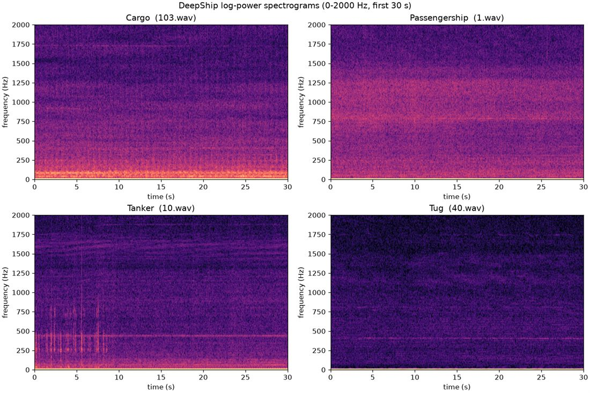

Underwater acoustic classifiers identify vessels from passive SONAR data, and routinely report accuracies of 97–99%. However, these figures are almost always measured within a single recording site, since each public dataset typically represents one deployment in one location. A classifier trained under such conditions learns the acoustics of a particular site alongside the vessels within it, and its behaviour at any other site remains largely undocumented.
Deep-Sea is a project aimed at extending vessel classification across multiple recording sites at once. It draws on four public corpora: ShipsEar and PORTIA from Spanish waters, DeepShip from Canada, and IARA from Brazil. The model is trained on a subset of these sites and evaluated on a site excluded from training, with the worst-case result across sites optimised rather than the average. The main difficulty is that each corpus adopts its own vessel taxonomy, so these must be reconciled before any cross-site comparison becomes meaningful.
The optimisation target is the signal frontend rather than a downstream neural classifier. A genetic algorithm searches over interpretable filter and pooling structures, which ensures that any frontend generalising across sites can subsequently be inspected and characterised by the acoustic properties it measures.